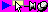

カラーキーとは、透明になるべき部分を特定の一色で塗りつぶし、その色の部分が透明になる、というものです。
これは画像が フルカラーの場合と 256 色や 16 色の場合で少々扱いが違います。
フルカラーの場合は、つまり「つかわなさそー」な色を「
抜き色」( カラーキー ) として、透明にしたい部分をそれで塗るわけです。使われなさそうな色としては、真マゼンダ (r,g,b)=(255,0,255) や、真緑 (r,g,b)=(0,255,0) がよく使われるようです。
でもそうするとマゼンダや緑を表現したい場合はどうするの？ということになりますが、(r,g,b)=(254,0,255) や (r,g,b)=(0,254,0) という色を使えば KAG では別の色として処理されるので OK です。
256 色の画像や 16 色の画像では、ある一つの
パレットインデックスを「透明色」として使います。このパレットインデックスで塗りつぶされた部分が透明になるのです。
Note
PNG などの画像形式の場合は保存時に
透明色(カラーキー)を指定できるようなソフトがありますが、そのようなソフトで出力された PNG 画像も扱うことができます。

抜き色の例